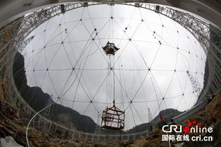

Related pictures
- 

The 500-meter spherical radio telescope uses the potholes in Guizhou karst area as the telescope site to build the world's largest single-caliber radio telescope with a receiving area of 30 standard football fields. As the world's largest single-aperture telescope, FAST will maintain a world-class position in the next 20 to 30 years. The brand-new design idea, combined with the unique location advantage, has broken through the 100-meter engineering limit of the telescope and created a new mode of building a giant radio telescope.
the first batch of national primary and secondary students' research and practical education bases.
1. use the unique natural karst depression site in Guizhou
2, apply active reflector technology to correct spherical aberration on the ground
3. light cable drags the feed support to reduce the 10,000-ton platform to tens of tons
1. FAST has the ability to extend neutral hydrogen observation to the edge of the universe and reproduce early images of the universe.
2. thousands of pulsars can be discovered in one year, and pulsar timing arrays can be established to participate in future pulsar autonomous navigation and gravitational wave detection.
3. lead the international very long baseline interferometry network to obtain ultra-fine structures of celestial bodies.
4. perform high-resolution microwave inspection to detect weak spatial signals.
5. participate in the search for extraterrestrial civilizations.
6. participate in meridian chain project to improve the performance of incoherent scattering radar dual-computer system.
7. extend the deep space communication capability to the outer planets of the solar system and increase the satellite data reception capability by 100 times.
1, TT and communication of spacecraft
2, pulsar timing array and autonomous navigation
3, incoherent scattering radar receiving system
4, high resolution microwave tour
1, spherical reflecting surface: radius-－300m, caliber-500m
2, effective lighting aperture: 300m
3, coke ratio: 0.467
4, sky coverage: zenith angle 40
5, 70 MHz-3 GHz
6, sensitivity (l band): 2000
site investigation and excavation system: it is planned to carry out detailed engineering investigation on the topography, engineering geology and hydrogeological environment of the selected area, excavate earth and stone work in the overall engineering area of the active reflection surface of FAST telescope, and design drainage channels in depressions, etc.
active reflecting surface system: includes a reflecting surface cable net body with a diameter of 500 meters and consisting of nearly 10,000 steel cables, reflecting surface unit, actuator device, ground anchor, ring beam, etc. The reflecting surface cable net is installed on the lattice ring beam and has 2400 connection nodes, 4600 reflecting surface units are installed on the cable net, a lower cable and an actuator device are connected below the 2400 nodes, and the actuator is connected with a ground anchor to form a complete active reflecting surface system, which can realize the function of forming an instantaneous 300-meter-diameter paraboloid under real-time control.
feed support system: build six support towers of over 100 meters on the peaks around the depression, and install a kilometer-scale cable flexible support system and cable guide and cable winding mechanisms to realize the first-level spatial position adjustment of the feed cabin; A feed cabin with a diameter of about 10 meters is manufactured, and a Stewart platform (fine tuning parallel robot) is installed in the feed cabin for secondary adjustment; A steering mechanism between the two-stage adjusting mechanisms is manufactured to assist in adjusting the attitude angle of the feed cabin.
measurement and control system: build a measurement reference network consisting of more than 10 millimeter precision reference stations. Through 9 close-range measurement base stations, real-time scanning of reflection surface configuration; Real-time feedback control of the feed cabin is realized by using a laser tracker and a laser tracking system; Construction of fieldbus system to realize active deformation of reflective surface; Build a real-time detection and health monitoring system.
feed and receiver system: develop a high-performance multi-beam feed receiver with a frequency ranging from 70 MHz to 3 GHz. Development of feed source, low noise refrigeration amplifier, broadband digital IF transmission equipment, high stability clock and high precision frequency standard equipment. Configure multi-purpose digital astronomical terminal equipment.
construction of observation base: it is mainly responsible for the construction of observation base and auxiliary facilities (including road construction, etc.) to ensure high-quality operation, observation and maintenance of supporting telescopes and to meet the work and living needs of FAST staff. According to the functional requirements, the construction plan of the observation base includes comprehensive buildings, maintenance workshops and scattered buildings scattered around the base and reflection surface.
project management department: Chinese academy of sciences
project co-construction department: Guizhou provincial people's government
project construction unit: national observatory of Chinese academy of sciences
Project participants: Tsinghua University, Harbin Institute of Technology, xidian university
the FAST site is selected at dawudang depression in jinke village, kedu town, pingtang county, Qiannan buyi and Miao autonomous prefecture, Guizhou province. the depression is located at 25.647222 north latitude, 106.85583 east longitude, with a diameter of about 800 meters, 85km from pingtang county town in the northeast and 45km from Luodian county town in the southwest. It is generally located in the slope zone where Guizhou Plateau transits to Guangxi hills. The terrain is generally high in the north and low in the south. Carbonate rocks are widely distributed in the region. Karst peaks, depressions and sinkholes are extremely developed. The terrain is rugged and low mountain. The highest mountain ridge in Dawudang depression is the southeast mountain top with elevation 1201m, the lowest elevation 841m, and the maximum relative elevation difference is 360m m. Karst depressions on the surface of depressions are developed, with large topographic relief, steep slope, simple landform type, and steep local mountains, forming steep cliffs and overhanging walls. The Chinese Academy of Sciences has registered the Guizhou Radio Observatory in Guiyang City, Guizhou Province to manage the project.
there are three reasons for the site selection of "dawodang". first, the landform is closest to the FAST shape and the amount of excavation is the smallest. Second, the karst geology here can ensure that rainwater permeates into the ground without damaging and corroding the telescope due to deposition on the surface. Third, the radio telescope needs a "quiet soil" and there is not a township within a radius of 5 kilometers near Dawudang. The radio environment is ideal.